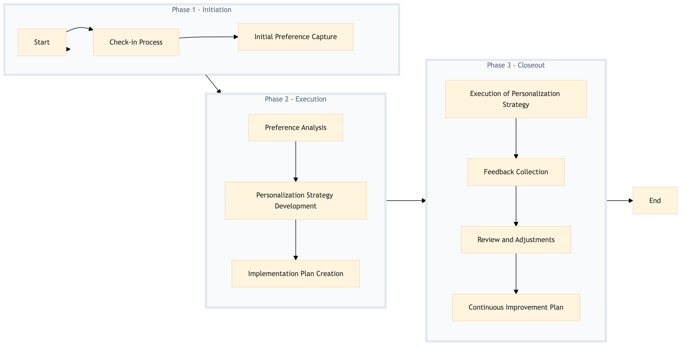

| Role | Steps |
|---|---|
| Front Desk Agent | 1.1 1.2 3.1 3.2 |
| Revenue Manager | 2.1 2.2 2.3 3.3 3.4 |
| Marketing Specialist | 2.2 2.3 3.3 3.4 |
| Concierge | 3.1 |
| Step | Name | Role | System | Input | Output | KPI | Dec? | Exc? | Pain Point / Risk |
|---|---|---|---|---|---|---|---|---|---|
| 1.1 | Check-in Process | Front Desk Agent | Oracle OPERA Cloud | Guest registration data | Checked-in guest record with basic preferences | Less than 3 minutes per check-in | N | Y | Handling last-minute changes in travel plans |
| 1.2 | Initial Preference Capture | Front Desk Agent | Oracle OPERA Cloud | Guest interaction during check-in | Updated guest record with initial preferences | Less than 5 minutes per preference capture | N | Y | Ensuring accurate data entry |
| 2.1 | Preference Analysis | Revenue Manager | Oracle OPERA Cloud, IDeaS G3 RMS | Guest preference data from Oracle OPERA Cloud | Analysis report on guest preferences | Within 24 hours of data collection | N | Y | Interpreting complex data patterns |
| 2.2 | Personalization Strategy Development | Revenue Manager, Marketing Specialist | Oracle OPERA Cloud, Salesforce | Analysis report | Personalization strategy document | Within 48 hours of analysis completion | N | Y | Balancing personalization with operational efficiency |
| 2.3 | Implementation Plan Creation | Revenue Manager, Marketing Specialist | Oracle OPERA Cloud, Salesforce | Personalization strategy document | Implementation plan with timelines and responsibilities | Within 72 hours of strategy development | N | Y | Coordinating across multiple departments |
| 3.1 | Execution of Personalization Strategy | Front Desk Agent, Concierge | Oracle OPERA Cloud, Knowcross HotSOS | Implementation plan | Guest experiences aligned with personalization strategy | 90% guest satisfaction rate | Y | Y | Adapting to unexpected guest needs |
| 3.2 | Feedback Collection | Front Desk Agent, Concierge | Oracle OPERA Cloud, Knowcross HotSOS | Guest interactions | Feedback report on personalization effectiveness | Within 7 days post-stay | N | Y | Ensuring honest and constructive feedback |
| 3.3 | Review and Adjustments | Revenue Manager, Marketing Specialist | Oracle OPERA Cloud, Salesforce | Feedback report | Adjusted personalization strategy document | Within 14 days of feedback collection | Y | Y | Implementing changes without disrupting guest experience |
| 3.4 | Continuous Improvement Plan | Revenue Manager, Marketing Specialist | Oracle OPERA Cloud, Salesforce | Adjusted strategy document | Continuous improvement plan with KPIs and timelines | Within 1 month of review completion | N | Y | Maintaining momentum for continuous improvement |
A structured process document for capturing and personalizing guest preferences at a Marriott full-service hotel using Oracle OPERA Cloud PMS and other Marriott systems.